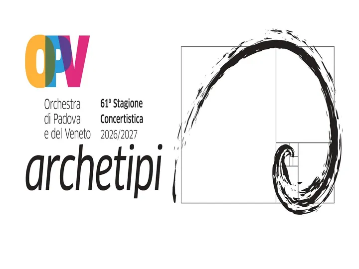

da gio 29 ott a gio 6 mag
OPV Archetipi
Dal 29 ottobre 2026 al 6 maggio 2027 si terrà la 61ª Stagione concertistica dell' Orchestra di Padova e del Veneto , firmata dal Direttore artistico e musicale Marco Angius . Un percorso d'ascolto sviluppato in 14 concerti , di cui uno fuori abbonamento, che porterà a Padova…
 Indicazioni
Indicazioni
- Costi e prenotazioni
- Costo non indicato · Prenotazione non indicata
- Programma
- Programma da verificare. Apri la fonte ufficiale per orari e possibili aggiornamenti.
- In caso di maltempo
- Nessuna indicazione specifica pubblicata.
- Note
- Acquisito automaticamente dalla fonte.
L’EVENTO
Descrizione completa
Dal 29 ottobre 2026 al 6 maggio 2027 si terrà la 61ª Stagione concertistica dell' Orchestra di Padova e del Veneto , firmata dal Direttore artistico e musicale Marco Angius . Un percorso d'ascolto sviluppato in 14 concerti , di cui uno fuori abbonamento, che porterà a Padova alcuni tra i più affermati solisti della scena internazionale, tra tutti i pianisti Angela Hewitt ed Emanuele Arciuli, i soprani Jiayu Jin e Giulia Bolcato, il violoncellista Luigi Piovano, il violinista Andrea Obiso, e l'attore Fabrizio Bentivoglio. Accanto ai grandi interpreti, prenderanno posto alcuni musicisti della nuova generazione, tra tutti i pianisti Giovanni Bertolazzi e Maya Oganyan.
Come di consueto, OPV offrirà alla cittadinanza il tradizionale Concerto di Natale alla Basilica di Sant'Antonio , dove risuonerà un programma interamente dedicato al Mozart più ricercato e meno noto.
Gli appuntamenti della nuova Stagione si terranno all' Auditorium Pollini e al Teatro Verdi di Padova, anticipati dalle prove generali aperte al pubblico.
La campagna abbonamenti avrà inizio da lunedì 14 settembre 2026 : prelazione rinnovo abbonamenti dal 14 al 16 settembre 2026; nuovi abbonamenti dal 17 settembre 2026, anche online su Vivaticket.it.
La 61ª Stagione concertistica dell'Orchestra di Padova e del Veneto è organizzata con il sostegno del Ministero della Cultura, Regione Veneto, Provincia di Padova, Comune di Padova e dei Mecenati "Art Bonus" Fondazione Cariparo, APS Holding e Associazione Amici OPV.
IL PROGRAMMA
Programma e orari
Appuntamenti raccolti dalle fonti elencate. Dove manca un orario, non è ancora disponibile in questa scheda.
Programma pubblicato
- 2026-10-29 — 2026-10-29 · 20:45:00
- 2026-11-12 — 2026-11-12 · 20:45:00
- 2026-11-26 — 2026-11-26 · 20:45:00
- 2026-12-09 — 2026-12-09 · 20:45:00
- 2026-12-17 — 2026-12-17 · 20:45:00
- 2027-01-14 — 2027-01-14 · 20:45:00
- 2027-01-28 — 2027-01-28 · 20:45:00
- 2027-02-11 — 2027-02-11 · 20:45:00
- 2027-02-25 — 2027-02-25 · 20:45:00
- 2027-03-11 — 2027-03-11 · 20:45:00
- 2027-03-24 — 2027-03-24 · 20:45:00
- 2027-04-08 — 2027-04-08 · 20:45:00
- 2027-04-22 — 2027-04-22 · 20:45:00
- 2027-05-06 — 2027-05-06 · 20:45:00
INFORMAZIONI UTILI
Prima di partire
- Controllare la fonte prima di partire.
ORGANIZZAZIONE